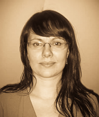

 With a Heritage in Herbal medicine, Rosemary’s initial passion was evident as a young child, feeling the strong connection with plants, the earth, animals and compassion for the welfare of our planet. With a passionate interest in herbal medicines and traditional methods of healing of her European ancestors, and that of cultures worldwide, it seemed a natural progression to become a dedicated professional Herbalist and Naturopath, a discipline that combines both ancient Western and Eastern health philosophies.
Rosemary specialises in digestive health, skin conditions and emotional well being, however as a general practitioner, she is able to address any health concern with holistic insight.
Rosemary has had success treating many common conditions including:
Rosemary enjoys participating within the community and has been an active volunteer for local organisations including: Committee Member for The Victorian Herbalists Ascociation (VHA), Receptionist & regular volunteer at CERES Environmental Park, Northern Support Services (NSS) assistant for people with a disabilities and providing massage therapy at Depaul House Fitzroy.